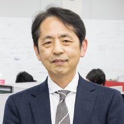

Faculties
(Before 2024)
Professor
Masaki Aida

Information Network / Network Science / Autonomous Distributed Control / Social Media Network / Social Network Analysis
Shogo Okamoto

Human Informatics / Virtual Reality / Assistive Systems / Affective Science and Engineering
Nobutaka Ono

Acoustic Signal / Information Processing (Microphone Array / Source Separation / Scene Recognition, etc)
Kaoru Katayama

Data Engineering / Data Mining
Yasufumi Takama

Web Intelligence / Information Visualization / Recommendation / Interactive Systems / Data Mining
Nobuyuki Nishiuchi

Human Interface / Usability / User Experience / Biometrics
Takahiro Matsuda

Communication Networks / Wireless Networks / Communication Quality / Network Diagnosis / Network Monitoring
Associate Professor
Sayaka Shiota
Speech Information Processing / Machine Learning / Speech Biometrics
Eri Shimokawara
Human-Computer Interaction / Intelligent Robot / Multi-model Interaction
Daisuke Sugimura
Image Processing / Computer Vision / Machine Learning
Takao Fukui

Perception and Action / Visuomotor Transformation Processes / Implicit Motor Control / Reach-to-grasp Movements
Shohei Yokoyama
Science for Instagrammable / Geo-social Survey / Visualization / Spatio-temporal Sata Processing
Associate Professor
Shino Shiraki
Sensor location estimation / Pedestrian indoor location estimation / Environmental information estimation
Hiroki Shibata
Data Mining / Data Visualization / Artificial Intelligence / Machine Learning / Optimization
Taishi Nakashima

Acoustic Signal Processing / Array Signal Processing / Blind Source Separation
Kazuki Nakajima

Computational Social Science / Network Science / Social Data Analysis
Yosuke Fukuchi
Human-AI Interaction / Explainable AI / Socially Intelligent AI
Hachiro fujita

Communications Systems / Coding / Cryptography
Special Lead Professor
Hiroshi Ishikawa
Big data / Real world data / Social data / Open data / Data mining / Machine learning / Artificial Intelligence / Tourism / MaaS / Lunar and planetary science
Hitoshi Kiya
Signal Processing / Image, Video and Audio Processing / Data Compression / Social Media / Multimedia Security and Forensics
Graduate School Adjunct Faculty
Professor
Masahiro Nagai

Educational Technology / Information Educatio
Masaaki Fujiyoshi

Media Information Security / Image Processing
Associate Professor
Wakako Fushikida
Practice and Evaluation of Flipped Learning for Statistical Literacy Acquisition / Research and Practice on Information Literacy Education for Senior Citizens